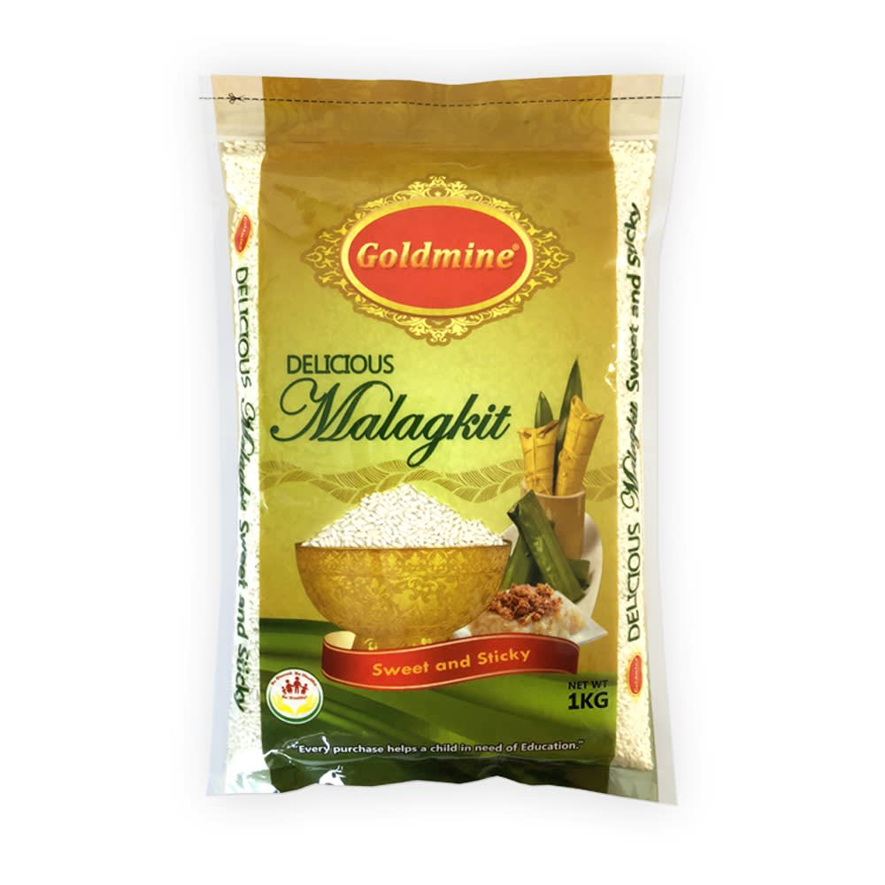
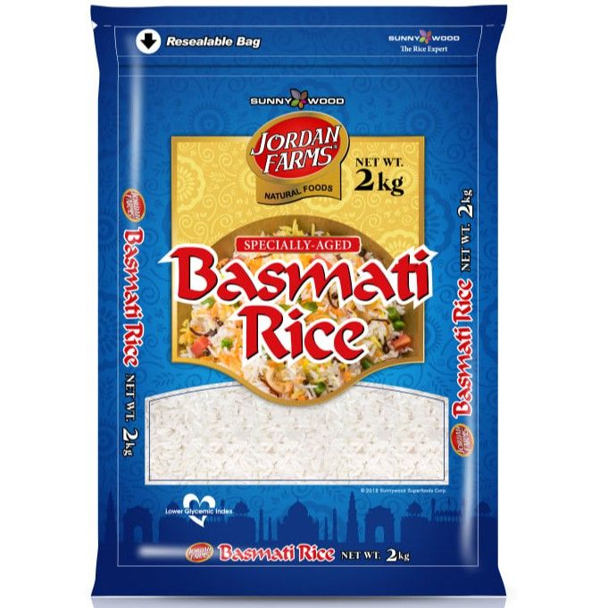

Discover the top-selling rice varieties from diverse farms across the Philippines and other countries. From aromatic Jasmine to indigenous favorites, explore the flavors, cooking techniques, and cultural importance of these popular grains cultivated across the nation.
SunRice Jasmine rice is a long-grain varietal perfect in Southeast Asian style dishes. It is often used in stir fry and curries as the natural fragrance compliments many spices. This jasmine rice will be slightly sticky but still fluffy. Its separating qualities and fragrance make it an excellent choice for fried rice, stir fry, and curry recipes.
You will love the delicate rice flavor and delightfully fluffed texture. All rice is naturally gluten-free.
Celebrate every occasion with Goldmine Delicious Malagkit, best for Filipino Classic breakfasts such as flavored porridge and "Kakanin." This rice has a sticky consistency when cooked. It is fiber-rich and contains no preservatives or additives. A resealable laminated pack with a handle makes it easy to take on the go!
Suffering from regular acid reflux can be frustrating. The first thing you need to be aware of is the type of food that you eat. Highly acidic and fatty foods tend to trigger reflux, so your best bet is to stick to a low-acid diet.
If you are a rice lover, you should incorporate brown rice into your diet. The Doña Maria Miponica Brown is one of the most well-known Filipino rice brands to trust. It is packed with nutrients like fiber, magnesium, and vitamin B. Not to mention, it tastes great with its chewy and fluffy texture.
Regular white rice is commonly bad news for individuals with diabetes. Eating rice regularly can cause a sudden spike in blood sugar levels due to its high glycemic index.
Thankfully, specific white rice options such as Slimmers Rice suit people with diabetes. Unlike regular rice, Slimmers rice is high in protein and contains zero cholesterol. This rice is vegan and gluten-free, rice that is 100% organic with a low glycemic index. As a result, it aids in lowering the risk of heart disease and Type 2 diabetes.
The homegrown Doña Maria Jasponica White Rice is known for its natural fragrance and soft texture. It is ideal for regular fried rice and even Sinangag -- a famous Filipino side dish of garlic fried rice.
It also helps that Jasponica White is a type of Jasmine long-grain rice that doesn’t stick together when frying on a hot pan or wok.
Are you planning to make risotto at home? The number one rule to creating a successful risotto is the rice itself. Long-grain rice like basmati or jasmine is strictly a no-no because risotto requires sufficient starch to make it work.
This brings us to the Doña Maria Miponica White, which has a soft and chewy texture. It is also fluffier and stickier, making using Miponica White to make paella or congee possible.
Imported from India/Pakistan, Jordan Farms’ Authentic Basmati Rice is high-quality long-grain rice with a soft and fluffy texture when cooked. You can cook it as biryani or pair it with spicy dishes such as butter chicken, chicken tikka masala, and mutton curry.
Rice balls, better known as onigiri, are a tasty, pick-me-up comfort food ideal for a light lunch or dinner. Using Japanese-style rice is always the right way to make an onigiri, such as this one by Jinsei.
Besides, Japanese-style rice is sticky enough to hold everything (e.g., Nori seaweed and fillings) together, making it ideal for shaping into a triangle, round, or cylinder.